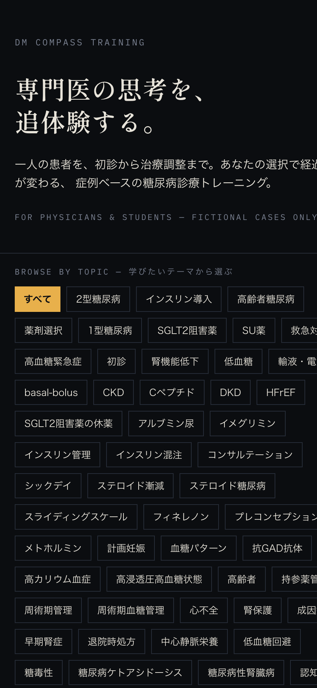
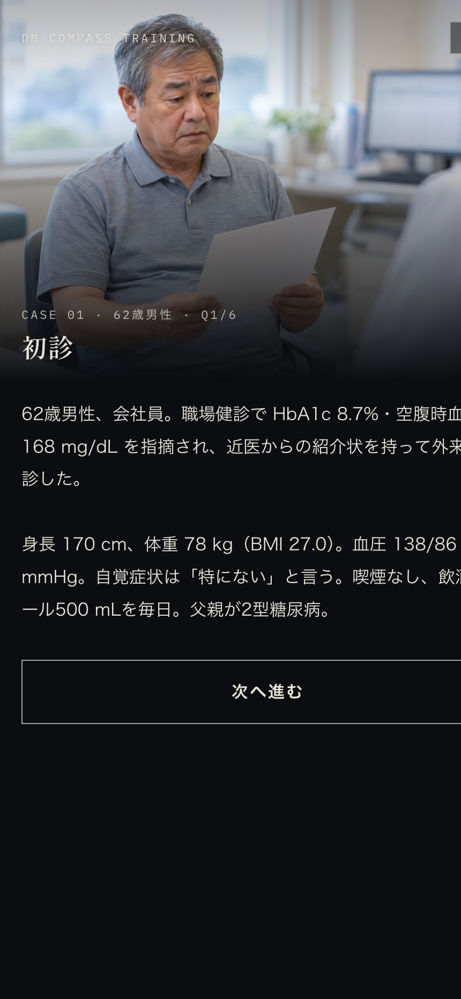

DM Compass Training
CASE-BASED DIABETES TRAINING
いま読んだ症例を、スマホで「選びながら」疑似診療できます。この症例は無料・登録不要。
症例外来・病棟 15症例（継続追加）
判定4択 → ◎○△× ＋ 専門医の思考解説
分岐選択で経過が変わる・全選択肢を復習可
機能テーマ別選択・進捗記録・成績表示
品質各症例に参考文献・専門医監修を順次表示


DM Compass Training
CASE-BASED DIABETES TRAINING
いま読んだ症例を、スマホで「選びながら」疑似診療できます。この症例は無料・登録不要。

